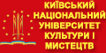

Київський національний університет культури і мистецтв здійснює підготовку за освітніми рівнями "Молодший спеціаліст", "Бакалавр", "Магістр". Також у Київському національному університеті культури і мистецтв функціонують три спеціалізовані Вчені ради із захисту кандидатських та докторських дисерт.